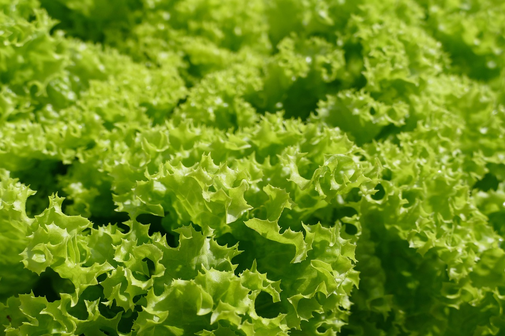
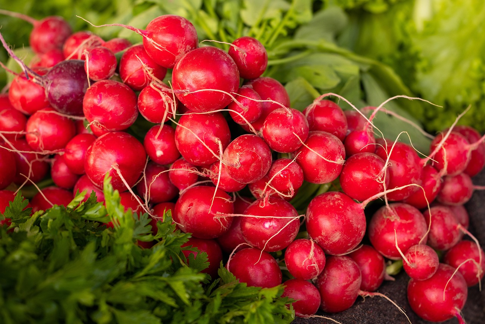
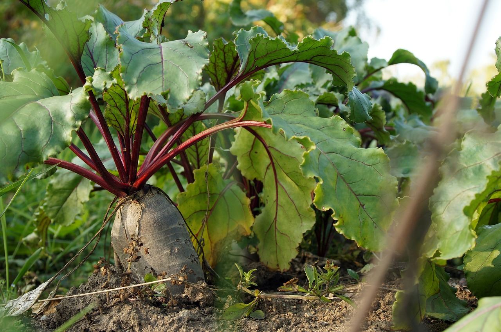
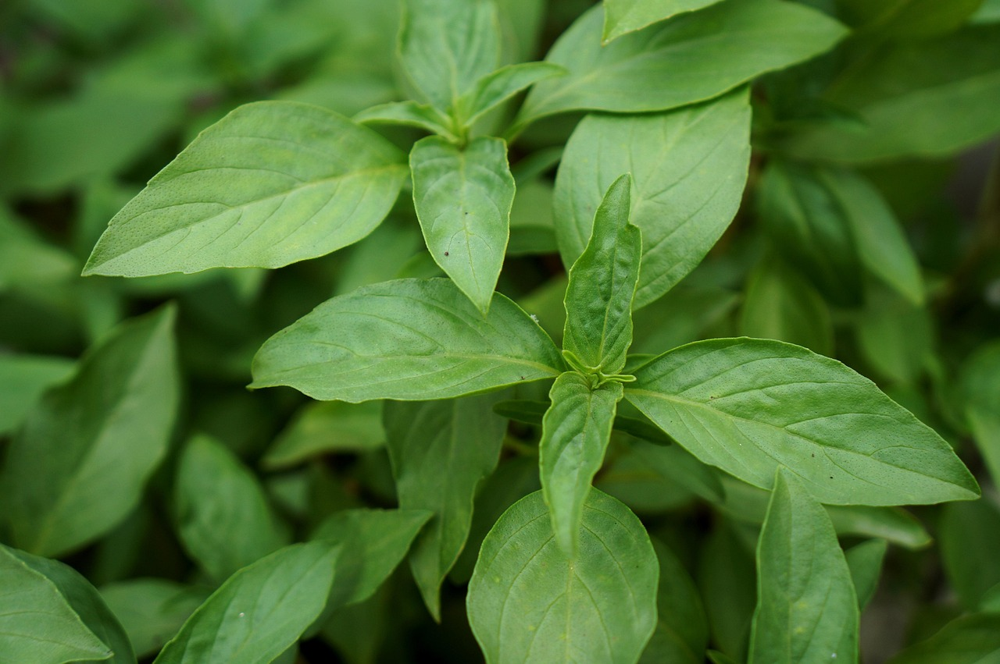
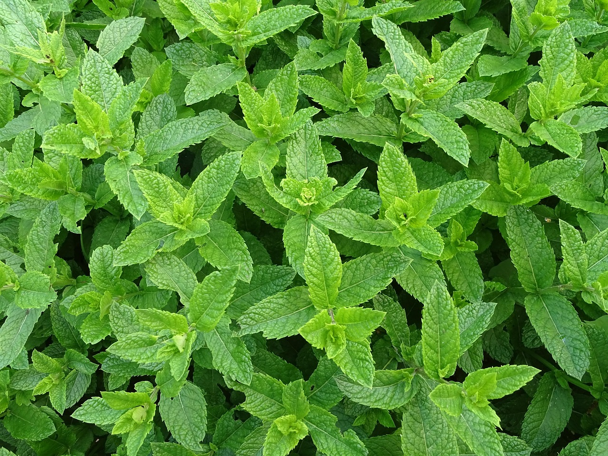

Curiosidades das Nossas Plantas

Alface: contém lactucina, que tem efeito calmante.

Repolho Verde: ajuda na digestão e fortalece a imunidade.

Repolho Roxo: possui antocianinas, antioxidantes potentes.

Rabanete: ótimo para desintoxicação do organismo.

Beterraba: fonte de energia e rica em ácido fólico.

Alho Poró: melhora a circulação e tem sabor delicado.

Alfavaca: utilizada para chás que aliviam o estresse.

Hortelã: auxilia na digestão e refresca o hálito.